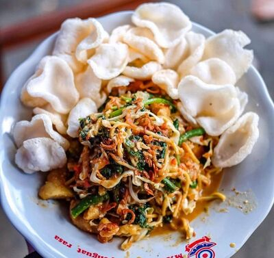

Seblak
Batagor
The local food in Bandung is incredibly diverse, with a wide array of mouthwatering options to explore. For instance, some notable examples include "seblak," a spicy and savory snack made from various ingredients; "batagor," a delightful combination of fried fish dumplings and tofu; "mie kocok," a hearty noodle soup with tender beef; and "lotek," a refreshing salad with peanut sauce. These dishes showcase the rich culinary heritage of Bandung and offer a delicious taste of the city's culinary diversity.
Mie Kocok
